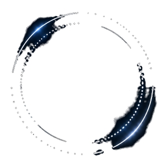
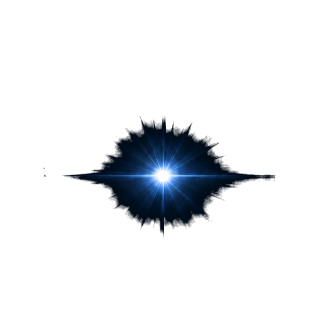

On your machine
The model runs on your own hardware. Your files stay local, and nothing is sent anywhere unless you choose to.
An operating system with intelligence built in.
Written from scratch in Rust, from the kernel up. The assistant lives inside the system, runs on your own machine, and works only through permissions you can see and take back.
In development

The model runs on your own hardware. Your files stay local, and nothing is sent anywhere unless you choose to.
Every capability is something granted, never assumed. You can see what has access to what, and take it back.
A new kernel written in Rust, designed around the assistant from the first line rather than added on later.
Arthur Preview is the next milestone. Leave your email and we'll send one message when it ships.